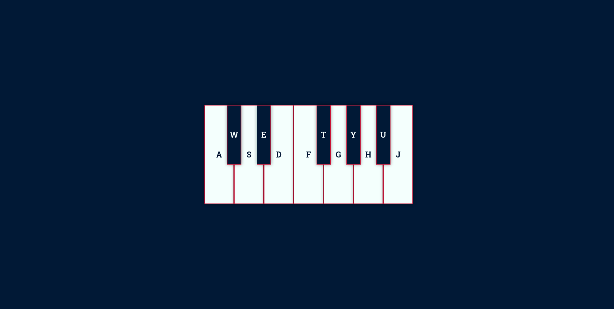
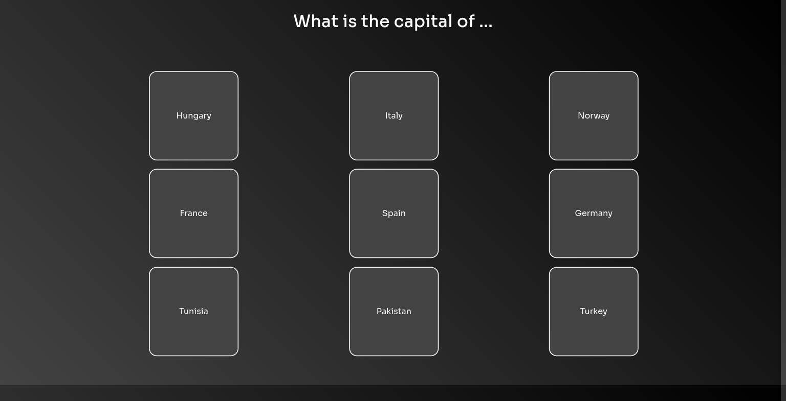
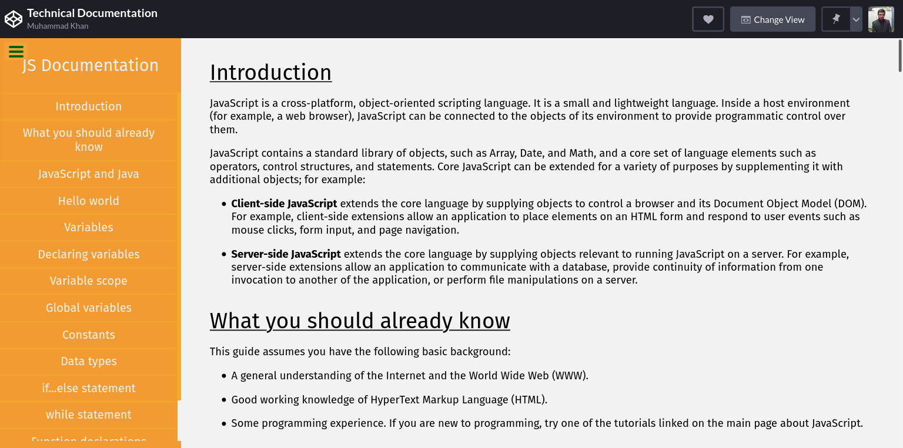
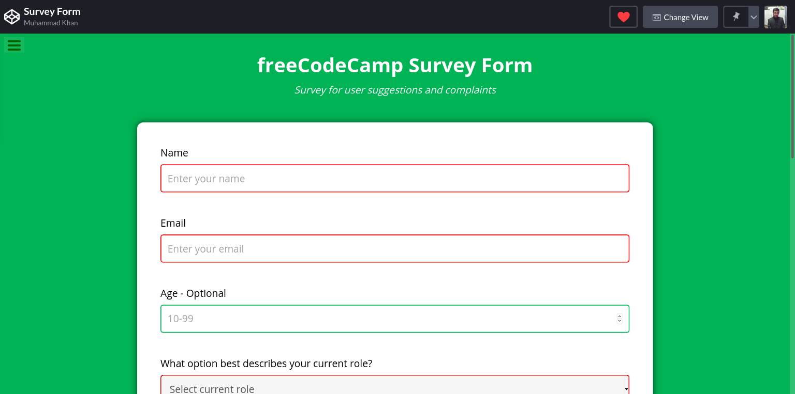

Virtual Piano
Simple Piano web toy made with HTML, CSS and JavaScript. Virtual Piano was a project made for hyperskill but has since been expanded upon because I loved the idea.

I am a Programmer, Full-Stack developer, and Android developer, currently studying for a Software Engineering degree from Virtual University.
I like programming because I am a natural problem solver. I prefer to program in Python with which I have four years of experience. I write concise and clean pythonic code. I have a good understanding of functional and object-oriented programming paradigms and use them extensively in my projects.
I am quite proficient in HTML5, CSS3, and JavaScript. I have a strong understanding of responsive and mobile-first web design principals. I’ve created a handful of web applications with Flask.
I have adequate knowledge of relational databases and SQL. I am experienced with C++, Kotlin, and PHP, and have dabbled in game design using the Godot engine, Pygame, and Kivy. I have experimented with a myriad of frameworks and technologies.
I am a self-motivated developer blessed with a healthy amount of curiosity and ambition. I am rational and logical and love a challenge. I am dedicated and always willing to go the extra mile to make my mark on the programming world.




Simple Piano web toy made with HTML, CSS and JavaScript. Virtual Piano was a project made for hyperskill but has since been expanded upon because I loved the idea.
Static, responsive flashcard web page made with HTML, CSS, and JavaScript. This was the first project made for Front-end Track on Hyperskill. This page shows country names on front side and capital names on the back side of the card.
Static, responsive webpage made with HTML, CSS, and JavaScript. This was the last project on the Responsive Web Design Certification on freeCodeCamp. This is in my opinion one of my best designs.
Static, responsive HTML and CSS input form. This was the first webpage that I made fully myself. Survey Form was one of the projects for Responsive Web Design Certification on freeCodeCamp.